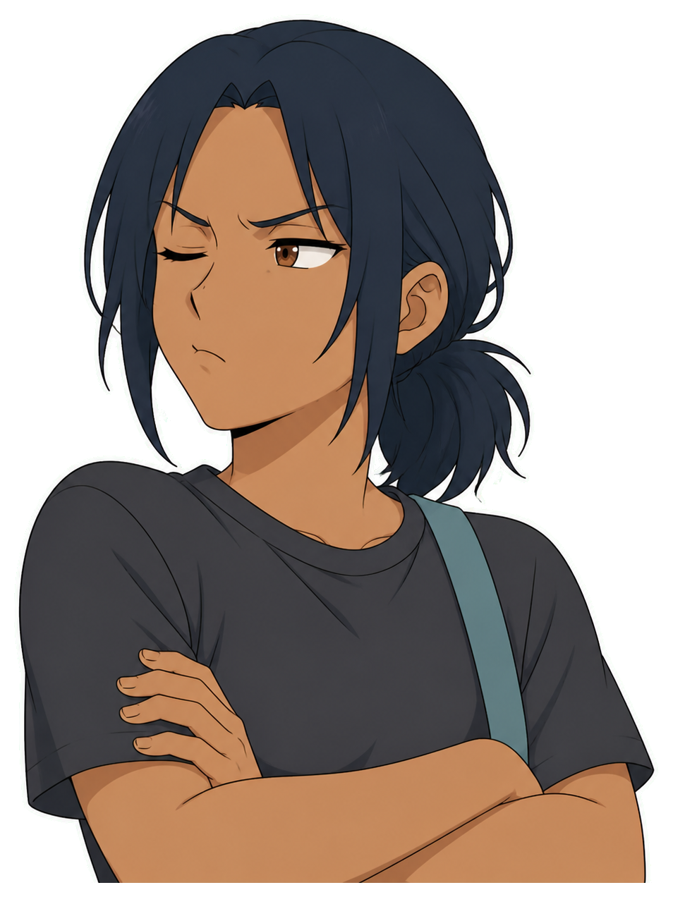
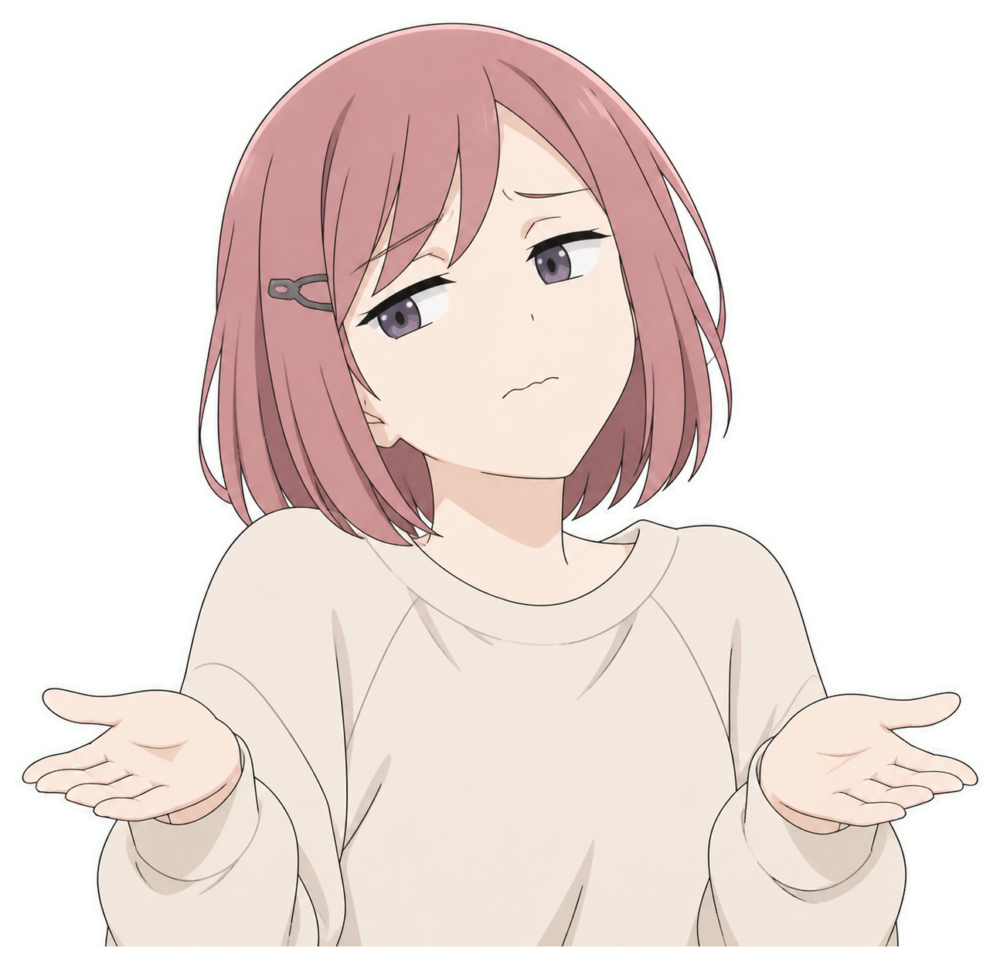
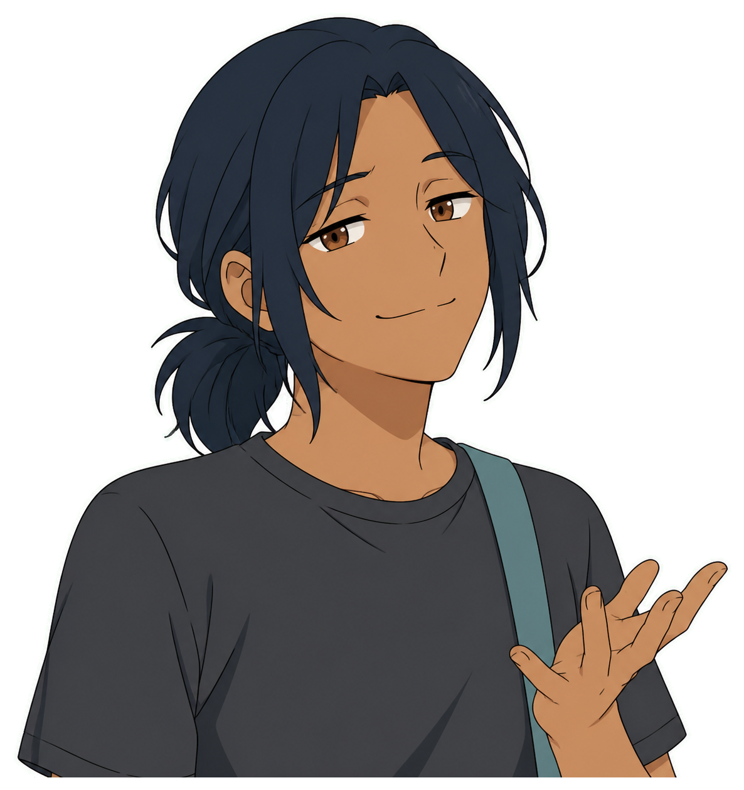
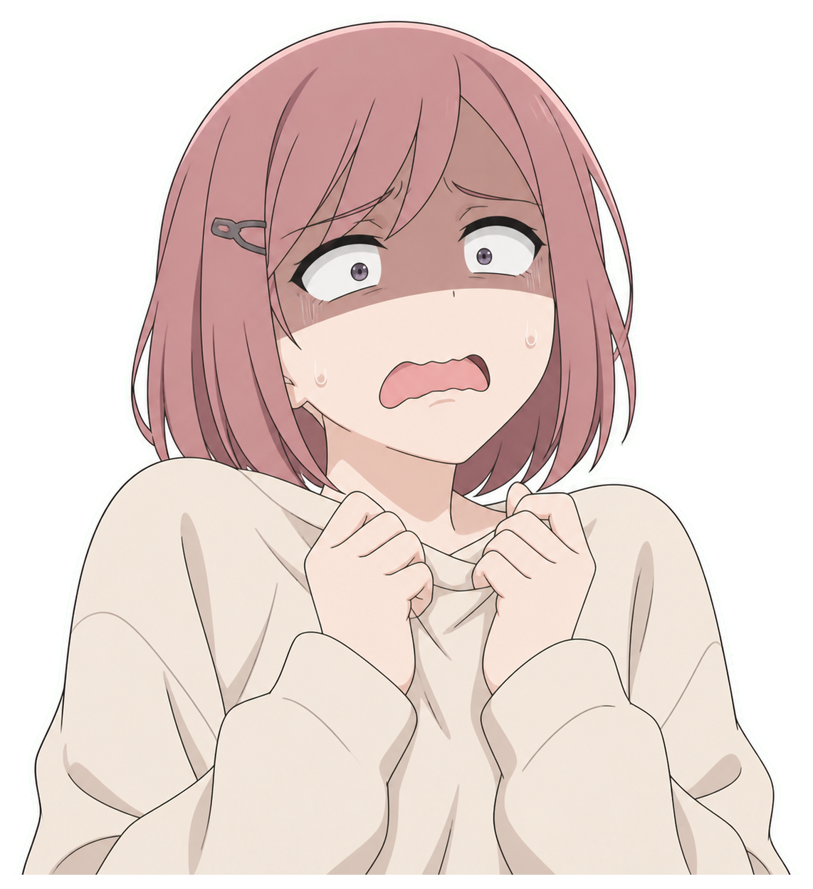
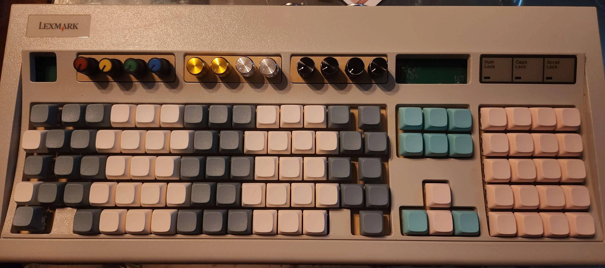
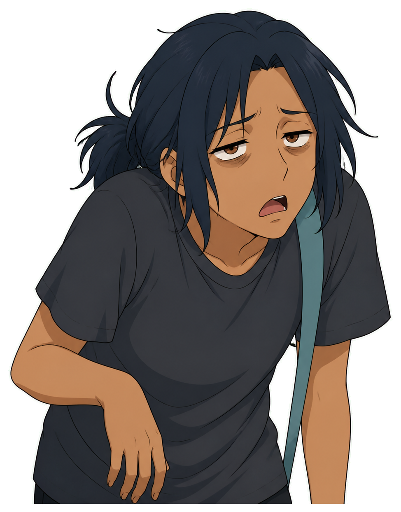
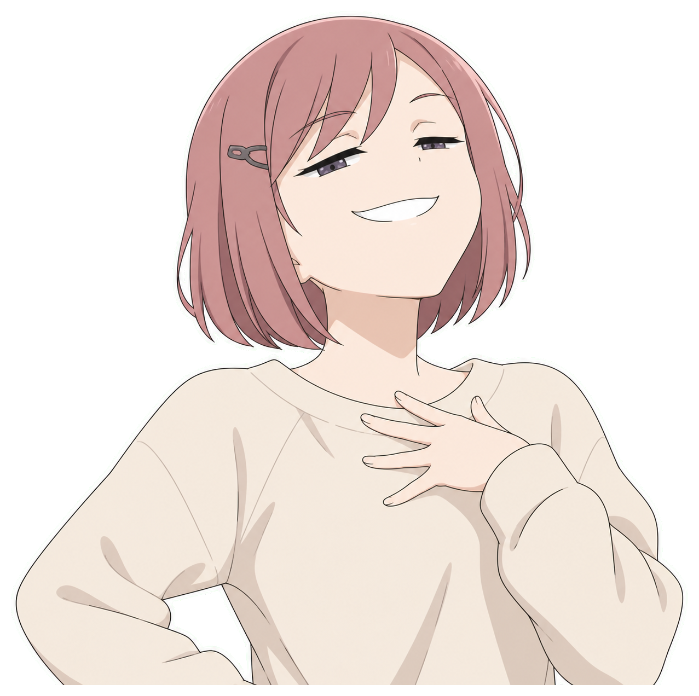

Choose the tail after the actor is blocked. Side tails are often cleaner than dropping every tail downward.
Manga balloon grammar
Editable dialogue shapes shown inside actual panel compositions. Color and offset shadows stay; balloon proportion, silhouette, tail direction, and speaker placement do the storytelling.
00
Placement before decoration
Overlap hair or shoulders when useful, but keep eyes, mouth, hands, and the important prop readable.
Ordinary speech is compact. Long narration grows tall. Shouts expand into negative space.
Crop interruptions and narrator boxes against the frame instead of centering every object.
01
Panel composition recipes
Mio待って。
The same shape works in every key?
speech · tail-l · speaker left

機構をもう一個追加するの？
vertical · tail-r


But where are the black keys?
There aren't any.
mb-group · two beats

もしかして…
Velocity was hiding in time all along.
...that seems important.
thought + mutter
Why is everything diagonal?!
shout · negative space

Three PCB revisions and one extremely specific purchase order later...
The prototype finally made music.
narration boxes · edge anchored

off mic
We haven't tested all 104 keys.
whisper · compact aside

Did someone say “one more feature”?
interrupt · crop at edge
02
Balloon families
Ordinary speech.
Speech
mb--speechFriendly, animated dialogue!
Cloud
mb--cloudPrecise. Technical. Blunt.
Angular
mb--angularIt worked!
Shout
mb--shoutMaybe...
Thought
mb--thoughtKeep this quiet.
Whisper
mb--whisperMeanwhile...
Narrator
mb--narratorMIDI: ARMED
Radio/system
mb--radioWait!
Interruption
mb--interrupt...sure, why not.
Mutter
mb--mutter03
Mix-and-match modifiers
Tailsmb--tail-lmb--tail-rmb--tail-blmb--tail-brmb--tail-tlmb--tail-tr
Proportionmb--xsmb--smmb--mdmb--lgmb--widemb--tallmb--vertical
Deliverymb--quietmb--loudmb--letteredmb--compactmb--rotate-leftmb--rotate-right
Treatmentmb--plainmb--accentedmb--darkmb--shadow-leftmb-groupmb-group--vertical